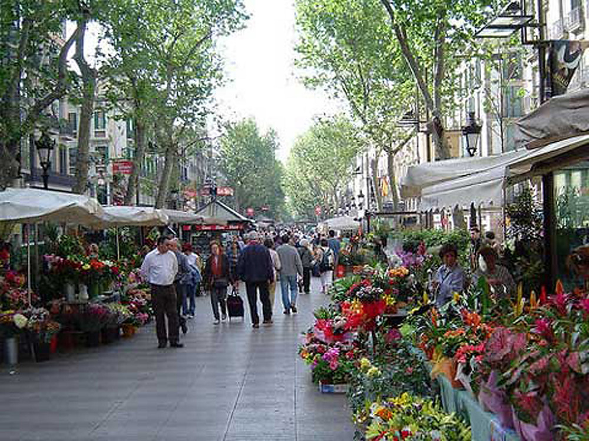

Johnnie and Oberta Baker's Photo Album Previous Gallery Next
|

A huge pedestrian walk that allows cars only on the two sides of the walk. It is loaded with shops of all kinds and restaurants. An interesting walk. But, more trouble loomed. One wheel on my mobility cart broke and we had to rent a wheelchair for the cruise. That meant Johnnie had to push me every place and we couldn't take many of the shore excursions that we wanted to the classical ruins. Luckily, Bob took wonderful photos and we could enjoy the sites second hand. |